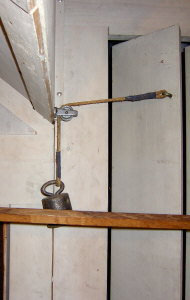
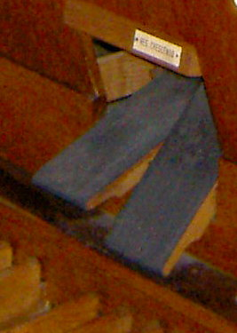
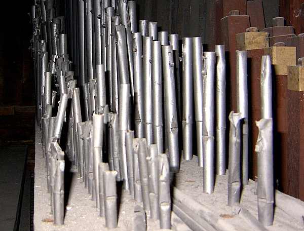

|
Tak jako v ka�dé oblasti lidské èinosti i varhany vyvolávají øadu otázek u ka�dého, kdo se s nimi setkává a� u� dennì, nebo zøídka èi poprvé. Nìkteré laické èi zaèáteènické dotazy mohou vyvolat úsmìv, odpovìdi na jiné mohou bıt nejednoznaèné èi dokonce sporné. Na této stránce jsou shrnuty nejèastìjší z nich, pokud zde nenaleznete odpovìï na svou otázku, kontaktujte mne pøímo èi z formuláøe na konci této stránky, pokusíme se odpovìï nalézt. Odpovìdi na dotazy, které mohou zajímat vìtší okruh ètenáøù, jsou zveøejnìny na stránce podrobnìjších odpovìdí.
|
Kolik píš�al vlastnì mají varhany?Tento dotaz je zámìrnì uveden jako první, patøí toti� k nejèastìjším otázkám, které varhany vyvolávají. Udìláte-li si malou „soukromou“ anketu a uká�ete-li nìkolika lidem napø. fotografie prospektù malıch i velkıch nástrojù, budete sami pøekvapeni, kolik lidí je pøesvìdèeno �e varhany jsou to, „co je vidìt“, tak�e èísla odhadnutého poètu píš�al u øady z nich se pohybují nìkde mezi pár desítkami a� maximálnì jedním stem. Skuteèné poèty jsou však podstatnì (nìkdy i velmi podstatnì) vyšší. Nejménì píš�al mají portativy (malé pøenosné varhánky) a varhanní pozitivy s jedním rejstøíkem (jednou píš�alovou øadou). U nich je poèet píš�al shodnı s poètem kláves, pøi bì�ném tónovém rozsahu se pohybuje mezi 56 a� max. 61 píš´talami. U všech ostatních nástrojù s více rejstøíky je píš�al více – obecnì tolikrát, kolik rejstøíkù nástroj má. Nejvìtší varhany mohou mít a� 33 tisíc píš�al, (naše nejvìtší varhany v chrámu sv. Moøice v Olomouci jich mají 10.700), varhany bì�né velikosti mezi 2 a� 5 tisíci píš�al, støední varhany okolo 500 a� 1500 píš�al a malé varhany (pozitivy, domácí nástroje apod.) do 500 píš�al. Jakım zpùsobem lze pøibli�nì urèit poèet píš�al? Vynásobíme-li poèet tónù pøíslušné klaviatury poètem rejstøíkù (bez spojek!). V manuálech je zpravidla 56 a� 61 kláves (podle tónového rozsahu nástroje, kterı mù�e bıt rùznı), v pedálu 24 a� 32 kláves. Vısledná èísla (pro manuály a pedál) pak seèteme. Tento vıpoèet je jen pøibli�nı - pøedpokládá, �e ka�dı rejstøík je tvoøen jednou píš�alovou øadou, která má navíc pro ka�dı tón jednu píš�alu. Toto pravidlo však má ale nìkolik vıjimek:
|
| I. manuál (hlavní stroj) C-g3 -56 tónù |
|||
| 1. |
Bourdon |
16' |
56 p�al |
| 2. |
Principál |
8' |
56 p�al |
| 3. |
Døevìná flétna |
8' |
56 p�al |
| 4. |
Salicionál |
8' |
56 p�al |
| 5. |
Trubicová flétna |
4' |
56 p�al |
| 6. |
Mixtura |
4x |
ètyøøadá mixtura (4x56)= 224píš�al |
| 7. |
I |
4' |
superpojka (nemá píš�aly) |
| 8. |
II/I |
8' |
spojka manuálù (nemá píš�aly) |
| 9. |
II/I |
4' |
superspojka manuálù (nemá píš�aly) |
| 10. |
II/I |
16' |
subspojka manuálù (nemá píš�aly) |
| II. manuál (�aluziovı stroj) C-g3 -56 tónù |
|||
| 11. |
Kryt |
8' |
56 p�al |
| 12. |
Quintadena |
8' |
56 p�al |
| 13. |
Unda maris 2x |
8' |
dvouøadı vıchvìvnı hlas (2x56)=112 píš�al |
| 14. |
Houslovı principál |
4' |
56 p�al |
| 15. |
Pøíèná flétna |
4' |
56 p�al |
| 16. |
Flétna |
2' |
56 p�al |
| 17. |
II |
4' |
superpojka (nemá píš�aly) |
| Pedál C-f1 -30 tónù |
|||
| 18. |
II/P |
8' |
spojka manuálu do pedálu (nemá píš�aly) |
| 19. |
I/P |
8' |
spojka manuálu do pedálu (nemá píš�aly) |
| 20. |
Oktávbas |
8' |
30 p�al |
| 21. |
Violon |
16' |
30 p�al |
| 22. |
Subbas |
16' |
30 p�al |
Celkem: 986 p�al |
|||
Jak „silnì“ (hlasitì) mohu hrát, nepokazím tím nìco?Tato otázka má dvì èásti – dotaz na techniku hry a na zvukové mo�nosti. Zvláštnosti a odlišnosti techniky hry jsou popsány dále (otázka odlišnosti hry na rùzné nástroje). Zvuk nástroje je tvoøen zvukem píš�al a jeho „sílu“ lze ovlivòovat dvìmi zpùsoby – volbou rejstøíkù (jejich poètu a vzájemné zvukové vazby) a u nìkterıch varhan otevøením èi uzavøením �aluzií. Zvukové mo�nosti nástroje jsou dány jeho dispozicí (nejslabší zvuk odpovídá nejtiššímu rejstøíku a pøípadnì uzavøenım �aluziím, nejsilnìjší je pak kombinací vìtšiny nebo všech rejstøíkù). Varhany jsou stavìny tak, aby oba tyto extrémy bez problémù zvládly, tak�e se nemusíme bát hrát v plénu èi tutti (na plnı stroj). U nìkterıch nástrojù je nedostateènì dimenzované vzduchové hospodáøství, pak pøi déletrvající akordické høe v plénu nestaèí ventilátor dodávat dostatek vzduchu do mìchù, regulátory tlaku nemohou správnì fungovat a varhany zaènou „hıkat“ – rozlaïovat se zmìnou (sní�ením) tlaku vzduchu. Tento jev mù�e ménì zkušeného varhaníka dost vylekat, je sice nepøíjemnı, staèí však chvíli poèkat a� se mìchy „nadechnou“ a ve høe lze pokraèovat. Zabránit mu lze buïto opatrnìjší registrací (vyøadit z „pléna“ rejstøíky, které zbyteènì zhutòují zvuk a jsou nároèné na spotøebu vzduchu, napø. rejstøíky v suboktávové poloze – 16’) nebo trvale rekonstrukcí vzduchového hospodáøství. Volba registrace neumo�òuje jen øízení vısledné hlasitosti
zvuku ale je základním umìleckım vırazovım prostøedkem varhan. Celá škála
dynamickıch stupòù od pianissima po forte v sobì obsahuje i promìnnou
barvu zvuku. Vısledné sluchové a emotivní vnímání je silnì individuální
zále�itostí (jen si uvìdomme, jak na nás pùsobí „burácející“ varhany v
plénu, pokud hrají pochod svatební a jak tyté� varhany se stejnım zvukem,
kdy� hrají pochod pohøební…). Další podrobnosti najdete v kapitolách o
akustice a oznaèování
varhanních hlasù. |
Lze na varhany hrát èasto nebo jen pøi vynímeènıch pøíle�itostech? Neopotøebovává se (nekazí se) nástroj èastım hraním?Varhany v sobì spojují dva základní principy – umìleckı a technickı. Z technického hlediska lze na tento hudební nástroj nahlí�et jako na technické dílo, které je projektováno a realizováno takovım zpùsobem, aby plnilo svou funkci danım zpùsobem a po oèekávanou dobu �ivotnosti. Obava, �e èasté (nebo dokonce ka�dé) hraní nástroj opotøebovává èi poškozuje je tedy zbyteèná naopak, èasté pou�ívání nástroje k úèelu, ke kterému byl vystavìn je pro nìj dokonce prospìšné. Pøi høe se celı nástroj uvádí do „pohybu“. Pohybují se nejen souèásti hracího stolu a traktury, ale také vzduch. Tento pohyb brání vzniku koroze v pohyblivıch ulo�eních (lo�iskách, vedeních atd. – pohybem se z pøíslušnıch souèástí stírá), nadmìrnému usazování prachu (v celém vzduchovém hospodáøství i píš�alách samotnıch) a ve spojení se zvukem i škodlivému pùsobení døevokazného hmyzu a jinıch �ivoèichù (kterım hluk a vibrace vadí a radìji se odstìhují jinam, kde napáchájí ménì škod). Existuje nìkolik vıjimek, kdy je lepší nástroj „šetøit“:
Mezi provozním „vytí�ením“ rùznıch nástrojù existují znaèné rozdíly. Jsou nástroje, pou�ívané jen pøi zvláštních pøíle�itostech (auly vysokıch škol, kostely v pohranièí), na které se hraje jen párkrát do roka a na druhé stranì varhany, které jsou v provozu dennì a za rok jsou v èinnosti i více jak po tisíc hodin (varhany v hudebních školách, obøadních síních, na poutních místech). Právì pøi srovnání stavu tìchto nástrojù si mù�eme snadno potvrdit, které z nich jsou na tom lépe a které spolehlivì chátrají a stávají se nepou�itelnımi…. Pøedpokladem spolehlivé funkce jakéhokoliv technického zaøízení (varhan nevyjímaje) je kromì správného návrhu a peèlivé vıroby s pou�itím prvotøídních materiálù a technologií i pravidelná údr�ba. Aèkoliv tøeba u auta nikoho nepøekvapuje pravidelná návštìva servisu, nechat alespoò jednou roènì prohlédnout varhany varhanáøi se èasto pova�uje za zbyteènost. Pøitom slo�itost nástroje je oproti automobilu èasto mnohem vyšší. Vìtšina souèástí traktury, vzdušnic èi vzduchového hospodáøství nepotøebuje bìhem své �ivotnosti �ádnou nákladnou údr�bu. Trakturu je pouze nutné podle potøeby regulovat (pneumatickou a mechanickou napø. pøi zmìnì klimatickıch podmínek), motor ventilátoru vy�aduje pravidelné mazání dle pøedpisu vırobce. Pøirozené opotøebení není vìtšinou na závadu a nebrání správné funkci (napø. prohmatanı potah kláves èi prošlapané pedály). Vìtšinu drobnıch závad, které se pøi provozu varhan vyskytnou (pøiznívající tón èi rejstøík, visící èi naopak nehrající tón èi píš�alu) apod. mù�e odstranit pøímo varhaník èi jiná zodpovìdná a vyškolená osoba. O tom, co ještì mù�e opravit varhaník sám a k èemu je ji� nutné volat varhanáøe je èasto obtí�né rozhodnout. V�dy je nutné mít na pamìti, �e po ka�dém zásahu nesmí bıt nástroj v horším stavu ne� pøed ním a �ádnı zásah (úprava) nesmí mít nevratnı charakter (musí zùstat mo�nost vrátit vše co nejjednodušším zpùsobem do pùvodního stavu). Dodr�ení tohoto pravidla vy�aduje jistou kázeò a urèitı stupeò znalostí dovedností (ale také materiální vybavení a potøebné nástroje). Napø. nasadit vypadlou pru�inu èi vyskoèenou ku�elku doká�e prakticky ka�dı, vymìnit míšek u� pøedpokládá urèitou zruènost, potøebné náøadí a pomùcky (pøilepím-li jej nìjakım pohodlnım „superlepidlem“, usnadním si práci ale také znemo�ním varhanáøi jeho budoucí vımìnu bez poškození døevìnıch souèástí). Je �ádoucí, aby u ka�dého nástroje byla ustavena zodpovìdná osoba (zpravidla slu�ebnì nejstarší èi „nejvzdìlanìjší“ varhaník), která se bude o nástroj starat a zodpovídat za jeho provoz i stav. V otázce základní prùbì�né údr�by a první pomoci pøi odstraòování bì�nıch závad by mìl bıt správce proškolen varhanáøem, kterı se o nástroj stará. Vıbornou pomùckou pro udr�ení nástroje v co nejlepším stavu je také provozní deník. Èastım dùvodem, která vede k omezování hraní na varhanách
je obava z vysokıch nákladù na provoz nástroje. Pokud chtìl v minulosti
varhaník napø. cvièit, potøeboval k tomu další osobu - kalkanta, kterı
"šlapal mìchy" a tomu bylo tøeba poskytnout nìjakou odmìnu èi
plat. Dneska jeho èinnost zastává elektrické èerpadlo - ventilátor. Ten
taky nepracuje zadarmo, ale vzhledem k velikosti elektromotoru (od cca
200W do max. 2,5kW u tìch nejvìtších nástrojù) náklady na jeho provoz
nejsou veliké. Pøidá-li se k tomu osvìtlení, spotøeba pøípadné elektrické
traktury a event. nìjaké topení v zimních mìsících, dostaneme se za hodinu
ke spotøebì od cca 0,2 do nìjakıch 3kWh, cena za kiowatthodinu je rùzná
ale rozhodnì ne vysoká (dnes okolo dvou a� tøí korun). Tak�e napø. �ákovi
(ale i stálému varhaníkovi), kterı na nástroj chodí cvièit by k uhrazení
nákladù mìla staèit nìjaká drobná mince. Pokud nástroj vyu�ívá pro své
potøeby nìjaká organizace èi sdru�ení dlouhodobìji (napø. škola pro své
�áky, sbor èi orchestr ke zkouškám a nahrávání), mìlo by bıt samozøejmostí
uzavøení dohody o podílení se na nákladech na provoz a pøedevším pravidelnou
údr�bu (opravy, ladìní). |
Na co si mám dát pozor, hraji-li na „cizí“ varhany (na varhany, u nich� jsem jen hostem)?Pracovištìm“ varhaníka je hrací stùl a pøedpokladem toho, abychom se na pracovišti cítili dobøe (a mnohdy i bezpeènì) je poøádek. Urèitá pravidla proto platí ve vztahu „stálého“ varhaníka k hostujícím i opaènì. Pøesto host by mìl dodr�ovat tato pravidla úzkostlivìji a pøedevším nesna�it se „domácímu“ vnutit své pøedstavy o poøádku. Tady platí spíše pravidlo o ponechání všeho v pùvodním stavu pøípadnì uvedení všeho do tohoto stavu v okam�iku, kdy nástroj opouštím (i zdánlivì neuspoøádaná hromada èi hromádky not mù�e mít svùj systém, ve kterém se vyzná jen její majitel a ka�dá pomùcka, tøeba tu�ka èi kolíèek na prádlo má své pøesnì urèené místo, aby byla po ruce v ten pravı okam�ik). Na co je tedy vhodné dávat pozor?:
Èas, kterı této èinnosti musíme vìnovat se bohatì vrátí nejen v dobrıch
vztazích s „domácím“ varhaníkem. |
Mají zùstat po skonèení hry �aluzie otevøené nebo uzavøené?Tato otázka je také velmi èastá a bıvá pøíèinou sporù
i vášnivıch debat. �aluzie (�aluziová skøíò) uzavírají èást nástroje (zpravidla
jeden stroj, u velkıch varhan mohou bıt i dvoje) do relativnì oddìleného
prostoru. Primární funkcí �aluzií je regulace intenzity zvuku, pro správnou
èinnost tedy musí bıt v uzavøeném stavu dostateènì „zvukotìsné“. Køídla
�aluzií i veškeré spoje �aluziová skøínì tak musí bıt pomìrnì dokonale
utìsnìny (zpravidla plstí). Z vıše uvedenıch dùvodù je tedy nutné nechávat �aluzie otevøené (èi alespoò pootevøené). U nìkterıch nástrojù je otevøení �aluzií po vypnutí varhan zajištìno automaticky (u elektrické traktury pohon køídel zajistí dojetí do otevøené polohy a teprve poté se vypne). Mo�né øešení otevøení �aluzií u elektropneumatického ovládání (stejné by bylo i u èistì pneumatického) ukazuje i fotografie. U èistì mechanického ovládání �aluzií nelze tuto funkci automatizovat, o otevøení se musí postarat varhaník. Proè nìkterım varhaníkùm otevírání �aluzií vadí? Pokud
má hrací stùl crescendo ovládané balanèní šlapkou (ne válcem viz foto),
je klidová poloha crescenda (vypnuto - ticho) pøi šlapce v pøední poloze.
Stejné poloze šlapky ale odpovídají zavøené �aluzie (také „ticho“). Zùstanou-li
�aluzie otevøeny, je ka�dá ze šlapek v jiné poloze a to vypadá na první
pohled tak nìjak „divnì“ – neuspoøádanì èi nepoøádnì a to pøedevším úzkostlivì
poøádkumilovnım varhaníkùm vadí. Druhım
argumentem bıvají obavy ze zaprášení varhanního stroje v �aluziové skøíni
pøípadnì obavy z poletujícího hmyzu a ptákù, které bude lákat krytı, polouzavøenı
prostor. Není však dùvod chránit jen èást varhan a vystavovat ji jinım
podmínkám ne� zbytek nástroje, prach si nevybírá a bude si sedat do celého
nástroje, hmyz si cestu najde v�dy a ptáci vyhledávají spíše nejvyšší
bod, na kterı mohou usednout (bohu�el to bıvají nejvyšší píš�aly otevøenıch
pedálovıch rejstøíkù, do kterıch vysílení ptáci padají a konèí svou �ivotní
pou�...). A pokud si ptáci v bezpeèí �aluziové skøínì postaví nìkde v
rohu hnízdo, není to problém otevøenıch �aluzií! |
Proè se na nìkteré varhany hraje pomìrnì snadno, u jinıch jdou klávesy tak tì�ce?Pocit, vnímanı na klávesách nástroje jako promìnná síla pøi jejím stisku a odlišnosti mezi rùznımi nástroji souvisí s pou�itou trakturou (systémem spojujícím klávesy s ventily pod píš�alami varhan) a èásteènì i typem vzdušnice. Hra na nìkteré nástroje mù�e bıt „snadná“ – klávesy jdou stisknout velmi lehce a je jedno, zda se hraje na jeden rejstøík èi v plénu, u jiného nástroje je síla, potøebná ke stisku klávesy znaèná a promìnná podle rejstøíkového obsazení. Pro vìtšinu zaèáteèníkù, kteøí dosud cvièili na elektronickıch klávesách (keyboardu) je tento rozdíl šokující. I mezi hrou na klavír a varhany jsou technické rozdíly. Varhany všech systémù pou�ívají vyvá�enıch kláves (ve své podstatì pák, opatøenıch na viditelném konci hmatníkem s potahem a na opaèném konci navázanıch na trakturu). Bod, kolem kterého se tato páka otáèí je od okraje klávesy pomìrnì vzdálenı, zatímco u keyboardu se klávesa otáèí pøímo kolem konce hmatníku. U� dráha pohybu je tedy silnì odlišná. Rozdílná je i hmotnost klávesy a tím i dynamika pohybu. Nejvìtší rozdíly jsou však v tom, co klávesa (a tím i prst hráèe) uvádí do pohybu. U keyboardu stisk klávesy spíná kontakt, umístìnı pøímo pod klávesou. Síla nutná pro jeho sepnutí je velmi malá a odpovídá ji i síla potøebná pro stisk klávesy. U klavíru stisk klávesy uvádí do pohybu klavírní mechaniku, která je podle typu klavíru slo�ena z cca 5 malıch (nìkolikacentimetrovıch), zpravidla døevìnıch a tudí� lehkıch souèástek. U varhan podle typu traktury klávesa mù�e pùsobit tøemi zpùsoby:
Odlišná konstrukce varhan znemo�òuje vyu�ít nìkteré techniky
hry, obvyklé pro jiné klávesové nástroje, pøedevším tzv. klavírní
úhoz. Dynamika varhan se neøídí silou èi rychlostí stisku klávesy,
závisí jen na registraci. Prudkı úhoz na klávesu je vylouèen pøedevším
u mechanické traktury, znaèné dynamické síly a rychlosti pohybu komponentù
by mohly v krajním pøípadì vést k nadmìrnému opotøebení, rozregulování
èi dokonce poškození traktury. |
Co to je „provozní kniha“, co se do ní píše?Provozní deník, provozní kniha, zápisník, zápis závad atd. To vše jsou rùzné názvy pro nìco, co by nemìlo chybìt u �ádného nástroje. Forma mù�e bıt rùzná, nìkdy je to sešit èi kniha, jindy list papíru, pøipevnìnı v blízkosti èi uvnitø skøínì nástroje s pøivázanou tu�kou èi propiskou. U nìkterıch nástrojù je veden kontinuálnì po øadu generací desetiletí, u jinıch se objevil teprve po poslední rekonstrukci èi generální opravì. Co obsahuje (nebo spíše mìl by obsahovat)? Varhany jsou nejslo�itìjší hudební nástroj, sestávají z tisícù a� desetitisícù souèástek. I pøes peèlivou volbu materiálu, návrh, dimenzování a vırobu ka�dého detailu se mohou vyskytnout závady. Pohyblivé díly podléhají opotøebení a všechny materiály pøirozenì stárnou. Ka�dé varhany by mìly mít ustaveného svého správce, kterı se o nì bude prùbì�nì starat a kterı je za jejich stav zodpovìdnı. Pøedevším tam, kde se u nástroje støídá více varhaníkù je deník vıbornou pomocí pøi údr�bì varhan. V deníku by mìly bıt zapsány všechny závady, které se pøi provozu varhan vyskytnou (i náhodné a náhodnì se vyskytující). Ka�dı varhaník, kterı závadu objeví by ji mìl bezprostøednì zaznamenat, uvést datum, popis závady a pøípadnì i zpùsob, jak se s ní vyrovnal (napø. provizorní oprava – vyta�ení èi zaslepení píš�aly visícího tónu, pøidání záva�íèka k drhnoucí ku�elce, doregulování traktury, vypnutí posti�eného rejstøíku atd.). V deníku by mìlo bıt místo pro reakci zodpovìdné osoby na záznam pøípadnì na vyjádøení varhanáøe (závada opravena apod.). Do deníku se zapisují i všechny zásahy do nástroje (ladìní, èištìní, malé, støední i velké opravy, tyto záznamy zapisuje varhanáø a potvrzuje zodpovìdná osoba). �ádoucí je i záznam o objevení škùdce (napø. èervotoèe). Provozní deník by nemìl obsahovat záznamy o ka�dém interpretovi, kterı na nástroji hostoval (pokud nenašel nìjakou závadu), není to však vylouèené a u nìkterıch nástrojù, kde je deník veden formou kroniky je to i �ádoucí. Provozní deník není zbyteèná byrokracie (nìkteøí tvrdí,
�e staèí ústní domluva nebo �e se o vše starají sami…) ale vynikající
pomùcka pro správnou péèi o nástroj. Vìtšina varhanáøskıch firem v souèasnosti
vedení deníku vy�aduje (u novıch i rekonstruovanıch nástrojù èasto bıvá
souèástí záruèních podmínek). Umo�òuje prùkaznım zpùsobem dohledat závady
a zpùsob jejich odstranìní, mù�e ukázat na vìtší problém (opakování závad,
konstrukèní vada, nesprávná obsluha). A v neposlední øadì je i zajímavım
ètením (pokud je veden delší dobu)… |
Jak èasto je nutné varhany ladit?Správnı umìleckı dojem z poslechu i hry na varhany pøedpokládá, �e vše v nástroji funguje jak má a všechny tóny navzájem ladí. Tento ideální stav je dosa�en jen málokdy, v praxi v�dy na nástroji alespoò nìjaká drobnost nefunguje (vzhledem ke slo�itosti varhan a poètu dílu, ze kterıch sestávají je to pøirozené). Nejèastìji se nedostatky tıkají ladìní. Varhany jsou po vırobì a stavbì naladìny varhanáøem,
bìhem garanèní doby mohou bıt ještì nìkolikrát doladìny. Samo ladìní (teï
ve smyslu vzájemného vztahu vıšek tónù jednotlivıch píš�al navzájem ne
jako technickı proces nastavení vıšky tónu ka�dé píš�aly) není v èase
konstantní, mìní se samovolnì pøedevším s klimatickımi podmínkami – zmìnou
atmosférického tlaku vzduchu a jeho vlhkosti (velmi mírnì) a pøedevším
teploty (dost podstatnì – zmìna teploty o 20 0C „pøeladí“ celı nástroj
témìø o ètvrt tónu!). Tyto zmìny zpùsobují vzájemné rozladìní pøedevším
labiálních a jazıèkovıch hlasù (odlišná konstrukce a princip vzniku tónu
v tìchto píš�alách vedou k odlišné závislosti na teplotì). Zatímco vıška
tónu u jazykù se s teplotou témìø nemìní, u labiálních je silnì teplotnì
závislá. Proto máme pocit, �e se jazyky èasto rozlaïují (vzájemné tónové
vztahy ve zbytku nástroje, kterı je z vìtšiny vystavìn v�dy na labiálních
hlasech zùstanou stejné, jen se zmìní základní vıšky tónù a jazyky tak
s ostatními hlasy pøestanou ladit). Nìkteré jazıèkové rejstøíky mají vìtší
sklon k rozlaïování obecnì (zvuk je tvoøen pohybem – vibracemi jazıèku
– kovového plátku, energie tìchto vibrací je podstatnì vìtší ne� energie
vibrací vzduchového prou�ku èi sloupce u labiálních píš�al a mù�e vést
k ne�ádoucímu pohybu mechanickıch souèástí – jazıèku, pouzdra, klínku
a ladícího drátu, které urèují vıšku tónu a tím k jeho zmìnì, mo�ná je
i zmìna mechanickıch vlastností – únava materiálu jazıèku se stejnım vısledkem).
Píš�aly jsou tou nejcennìjší souèástí varhan, v nich je „ukryta“ umìlecká stránka nástroje. Ka�dé ladìní pøedstavuje pro píš�aly urèitou zátì�, pøi které dochází k jejich opotøebení a hrozí riziko jejich poškození. Nejcitlivìjší na ladìní jsou kovové píš�aly (pøedevším øezané na tón). I pøi citlivém pou�ití ladicího rohu je píš�ala silnì zatì�ována a hrozí její deformace v nejslabším místì (zborcení kolem labia a v oblasti nohy) a tím i ztráta intonace, také ústí píš�aly se mù�e natrhnout èi zbortit dovnitø. I ostatní typy ladìní hrozí únavou materiálu (stùèky mìknou a nedr�í ladìní, v horším pøípadì se ulamují). Zátky døevìnıch píš�al se èastım ladìním uvolòují a pøestávají tìsnit, šrouby, kterımi jsou upevnìny ladítka se vytrhávají ze závitù atd. Do píš�alištì varhan, ve kterıch se provádìlo èasté a nešetrné ladìní je pak èasto �alostnı pohled (viz foto). Jak èasto je tedy nutné nástroj naladit? Skuteènì plné pøeladìní nástroje staèí provést pøi velkıch (generálních opravách), pøi kterıch byly píš�aly vyjmuty z nástroje. Dostaèující interval je zde i více jak 50 let (napø. náš nejznámìjší a nejvìtší nástroj u sv. Moøice v Olomouci, na kterém je roènì nahráno nìkolik CD a kterı dennì slou�í k liturgii byl celkovì znovu naladìn vèetnì mixtur a� cca 35 let po generální opravì). V mezidobí staèí nástroj jen podle potøeby doladit (ojedinìlé tóny, ne celé píš�alové øady). Jazıèkové rejstøíky je vhodné doladit alespoò 2x roènì (pøed létem a pøed zimou). Pokud je rozladìní jazykù velké, mohou se pøeladit i èastìji, v�dy je však tøeba pamatovat na šetrnı pøístup a pou�ití odpovídajícího náøadí. Rozlaïuje-li se Váš nástroj èasto a nerovnomìrnì, nemusí
to bıt jen díky píš�alám. V tomto pøípadì je pøíèina jinde – píš�ala není
v�dy zásobována vzduchem o stálém tlaku a mno�ství. Vıška tónu píš�aly
je toti� na konstantních vzduchovıch pomìrech silnì závislá (napø. tremolo
vyu�ívá této závislosti k cyklické zmìnì vıšky tónu pomocí rozkolísání
tlaku vzduchu). Pøíèinou rozladìní je nestejné otevøení ventilu pro pøívod
vzduchu k píš�ale díky rozregulování traktury èi zchátralosti vzdušnice,
zmìna (kolísání) tlaku v mìchu (zmìna zátì�e, špatnì pracující nebo dokonce
nefunkèní regulátor) nebo úniky vzduchu díky netìsnostem (kolem zásuvek,
v píš�alnicích, kolem nohy píš�aly). Tady by bylo vhodné, aby nástroj
prohledl varhanáø a pøíslušné závady odstranil (vyregulovat mechanickou
èi pneumatickou trakturu by mìl umìt i varhaník, regulace je zpravidla
potøebná nìkolikrát do roka, pokud není u novìjších nástrojù øešena automaticky).
|
| Zatím rozpracováno, poslední úpravy 2.1.2010.... |
Pokud jste zde nenalezli odpovìï na Váš dotaz a nepodaøilo se Vám vysvìtlení najít ani v Anatomii varhan ani ve Slovníku, pou�ijte následujícího formuláøe a zeptejte se, pokud bude problém zajímavı i pro ostatní, bude dotaz i odpovìï na nìj zveøejnìna na této stránce èi další stránce podrobnìjších odpovìdí. Pokud si z nìjakého dùvodu nepøejete zveøejnìní odpovìdi (soukromı dotaz), uveïte, prosím, tuto skuteènost v textu dotazu èi pøipomínky. Dìkuji. Formuláø pro polo�ení dotazu
èi zaslání pøipomínky
|
Poznámka: Tato stránka je souèástí Anatomie varhan ®, © Ing. Petr Bernat.